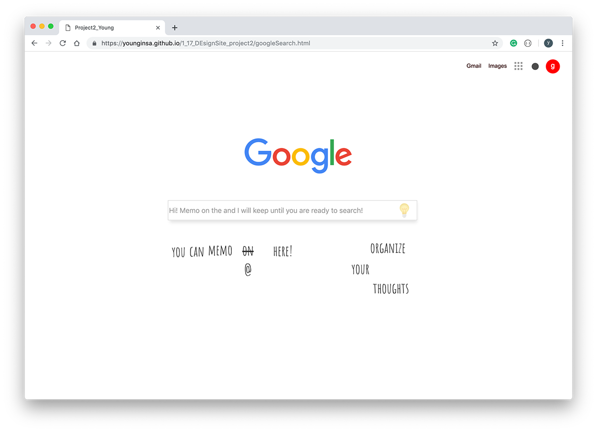
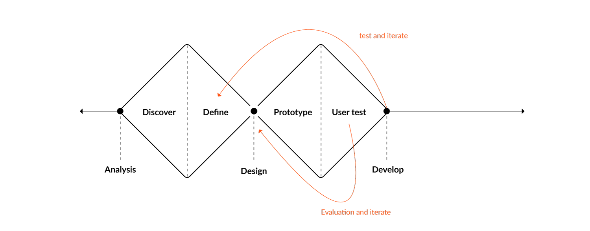
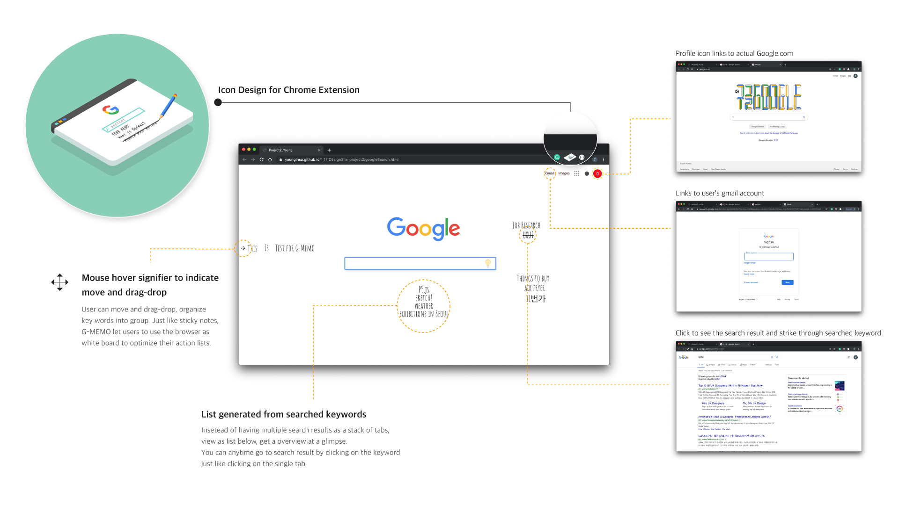

Google memo - Tab organizer
Chrome extension to organize your tab in a sticky memo form on a Google main page

searching to-do things, email, music, social media, and..
Oh my browser tab is almost invisible!
Many of our days start with opening up the browser. We check email, search things on a separate tab, multiple tabs,
oh also need some music to boost up the day.
Often my chrome browser ends up with 30+ tabs, several browser windows to organizes things.
I was using the browser tab as a sticky note, but not in an efficient way. (From the 10+ tab, you
already cannot see the title tag, barely.) My idea was to create a web-sticky note on the interface
I use every day - the google search page. Elements will be listed directly by searching keywords,
move, drag-drop actions that resemble sticky notes are applied. Click on the text to see the search
result, and now you have your own dashboard on the Google search page!
Individual Project
Duration: 3 weeks
Desgin Process

Problem
Because of the diverse usage of a search engine to work and maintain daily life, keywords and search results varies from information to grocery shop, checking bank account, online reservation, etc. To optimize these actions which often end up with 20 to 30+ tabs, it needed a way to organize search keywords. Moreover, tabs quickly became unreadable due to limited space to display the information. The challenge was to design UX with an information architecture that displays and arranges search history based on the user's intention.
User Flow
The solution is designed by providing a customized experience enhancing the user's task flow by combining sticky note UX to it. The interactions from a sticky note I focused on are - write, move and attach to visually organize thought flow. This strategy is effective and intuitive in terms of indication. User's easily utilized sticky notes to organize information in their own way.
Interaction Design
Visually customizing search history is designed by implementing the sticky note actions to mouse interaction. Move, drag and drop and click is used with mouse signifier and wiggling, strike-through gesture to indicate the actions to the user.
